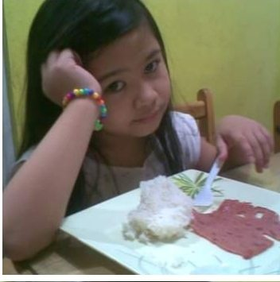
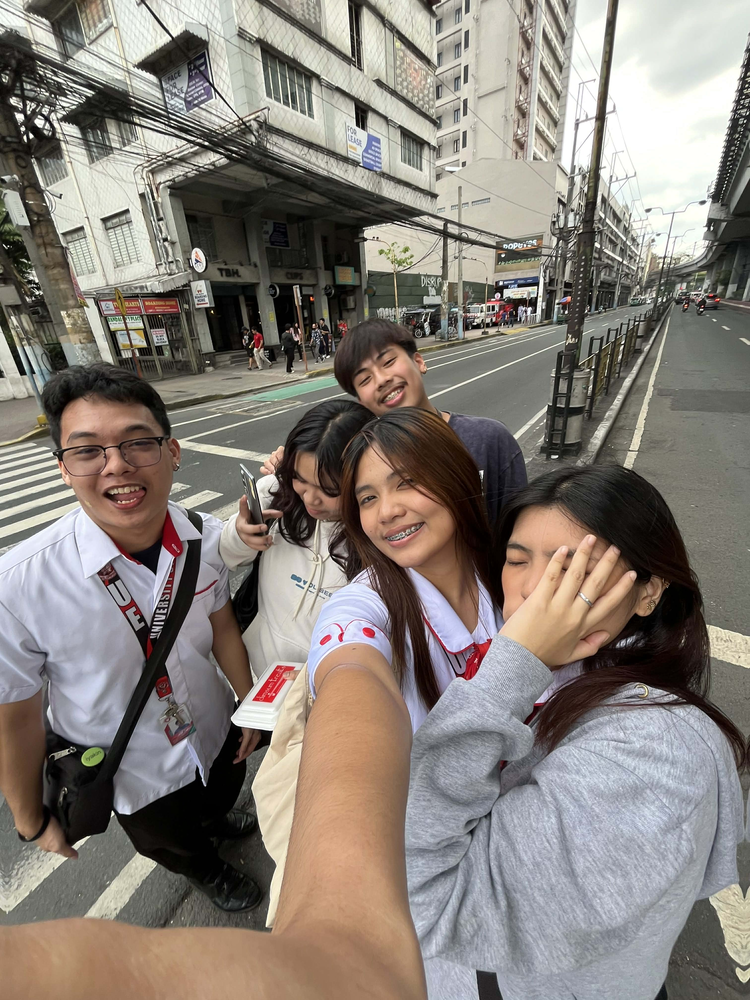

Going Through What I Went Through
If you had told me at 13 where I would be today, I might have found it hard to believe.1 Growing up, life was often confusing and didn't look like the usual story I imagined.2 I've always tried to stay happy, even when things felt uncertain.3 Most of the time, I lived at my father's house, but it was really my grandparents who helped raise me.4 At first, this unusual family setup was hard to accept, especially when I saw friends with more typical families.5 My parents weren't married, and my mom visited sometimes, so I also spent time at her place, where my other grandmother lives.6 Even though my family was different from others, it was still full of love in its own special way.7 My grandmother taught me early how to be independent, which wasn't always easy because sometimes I felt like I had no one to fully rely on.8 But that independence became a strong part of me.9
Over time, I started to understand why my life had been like this, and even though it wasn't simple, it taught me important lessons about staying strong.10 I learned that staying positive, even when things look different or hard, really helps.11 These experiences shaped me and helped me see the love and care around me, even if it wasn't like what most people expect.12 They gave me the confidence to keep going, believing that better things are still coming.13 Life's challenges and my unusual family made me who I am today.14 I'm thankful for the strength and hope those times gave me, and I carry those feelings as I face each new day with optimism.15
My teenage years were a mix of trying to figure out who I really wanted to be and dealing with the challenges of growing up.1 Looking back, there are moments that make me cringe, times when I felt awkward like many teenagers do.2 Even though those times were uncomfortable, they were important for me to learn and grow.3 Like many teens, I spent a lot of time trying hard to fit in and be seen as cool.4 I followed trends, wanted to be liked, and sometimes forgot who I really was.5 But after a while, I got tired of pretending to be someone I wasn't.6
Things changed during the pandemic when I turned 15 and was stuck at home with a lot of free time.7 Instead of feeling lonely, I used that quiet time to slow down and think about myself and what was important.8 Without all the usual distractions of school and friends, I had space to think deeply about my choices and how to be better.9 I started learning new things from inside myself, thinking about how I could improve.10

That still, quiet time became a big turning point for me.11 It helped me become stronger and more confident.12 It was a key time that helped build the person I am now and gave me the drive to keep moving forward.13 The self-awareness I gained helped me accept who I am instead of hiding parts of myself.14 I started paying more attention to what I really like and who I want to be, instead of just trying to fit in.15 This didn't happen all at once, but step by step.16 I learned that growing is something we do all the time, and every experience, good or bad, helps us become stronger.17 Overall, my teenage years gave me a strong base for a lifelong journey of learning and accepting myself.18
College has been an exciting and important part of my life so far.1 It's a time when I keep growing while staying connected to who I was as a teenager.2 Many of my values stay the same, but I've also learned to accept change and adjust in new ways.3 Every experience, whether it's hard or successful, gives me a chance to think and get better.4 I still make mistakes, but now I try to be patient and kind to myself about them.5
College has pushed me to leave my comfort zone, meet people from many different backgrounds, and understand myself better.6 Meeting new people has helped me see the world in new ways.7 This part of life has also encouraged me to keep working toward being a better version of myself every day.8 What started as a quiet time of thinking during the pandemic has grown into a constant process of learning and growing.9 I'm filled with hope and strength, and I believe that no matter where life takes me, I have what I need to face it with confidence and kindness.10
College is about more than just school; it's about learning life lessons and building my future.11 I'm thankful for the chance to follow my interests and challenge myself.12 This time has made me more committed to always growing and learning.13 While I respect my past and what shaped me, I also look forward to what's next with excitement.14 The journey continues, and I'm ready to face whatever comes with an open heart and mind.15
HOME